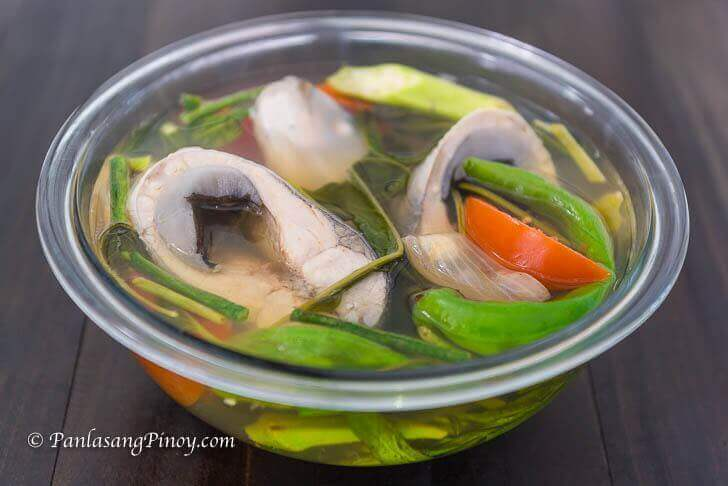

SINIGANG NA BANGUS

Sinigang gang hanggang umaga
Sinigang na Bangus is a type of sour clear broth fish soup.
This recipe that we have here is basic, but it is my favorite among all
the versions that I have tried. My family likes this too because
it is simple and delicious.
INGREDIENTS
- 2 lbs. bangus
- 1 40g pack Knorr Sinigang sa Sampaloc Mix (Original)
- 1 bunch fresh kangkong leaves
- 12 pieces sitaw
- 6 to 8 pieces okra
- 2 pieces long green pepper
- 1 medium tomato
- 1 medium yellow onion wedged
- 2 1/2 tablespoons fish sauce
- 1/4 teaspoon ground black pepper
- 2 quarts water
STEPS
- Heat the cooking pot. Pour water into it.
- Add tomato and onion. Let it boil.
- Add bangus. Cover and cook in medium heat between 8 to 12 minutes.
- Add Knorr Sinigang sa Sampaloc Mix. Stir. Cook for 2 minutes.
- Put the long green pepper into the pot. Add snake beans and okra. Stir. Cover and cook for 5 to 7 minutes.
- Add fish sauce and ground black pepper. Stir.
- Put the kangkong leaves into the pot. Cover the pot and turn the heat off. Let it stay for 5 minutes.
- Transfer to a serving bowl. Serve.